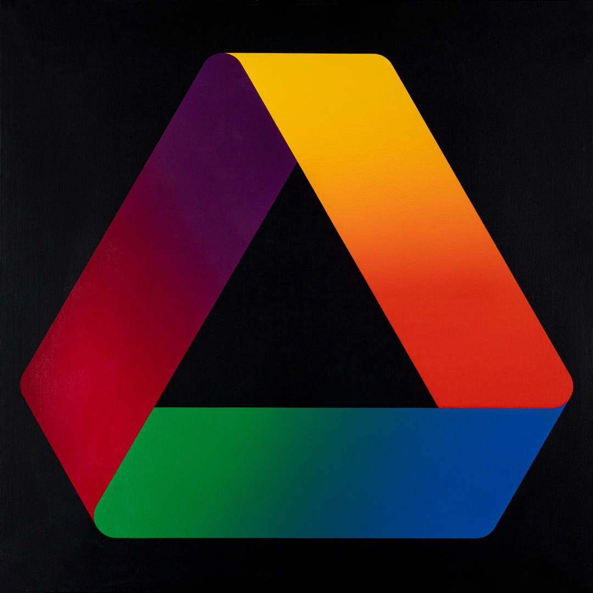

Celestino Facchin
Biografia
Facchin nasce a Farra d'Alpago nel 1940 e, in qualità di autodidatta, iniziò giovanissimo quella ricerca artistica che lo portò dal figurativo all'informale. Già negli anni ‘60 la ricerca tra produzione visiva e cromatismo lo condusse ad esplorare non solo i terreni della pittura, ma anche quelli della grafica e del design. In una scheda a lui dedicata dal Museo d'arte contemporanea Umbro Apollonio di San Martino di Lupari si legge: «movimento, colore e percezione visiva indagati in maniera meticolosa e viva con l'attenzione scientifica dell'operatore visivo più che dell'artista. Il taglio didattico che le opere di Facchin assumono è da considerarsi un tratto fondamentale e peculiare della sua espressione artistica; assieme al controllo delle forme geometriche, all'espressività data dall'organizzazione spaziale e rigorosa dello spazio». Oltre ad un viaggio significativo negli anni 1968-71 in Argentina, Brasile e Uruguay, nella sua carriera artistica - espose anche a Parigi, Barcellona, Tokyo, Los Angeles e Caracas - lo troviamo nel 1977 nel Collettivo Sincron di Brescia con artisti come, ad esempio, Alberto Biasi, Bruno Munari, Gaetano Pinna ed altri, mentre nel 1979 entrò a far parte del gruppo autogestito Verifica 8+1 di Venezia Mestre, dove svolse un'intensa attività didattico-artistica. Durante gli anni ‘70 nella terra bellunese Facchin ha lasciato il segno, tra le altre sue attività, nella costituzione del Circolo artistico bellunese. Molte sue personali si svolgono e Mel-Valbelluna dal Circolo attivo della città.

Anello di Moebius
L’anello di Moebius è una delle opere principali di questo artista. Realizzato nel 1983 con acrilici Liquitex, con tecnica mista-aerografo su cartoncino applicato su masonite, di misura pari a 40x40cm, raffigura la celebre forma topologica del nastro di Möbius, caratterizzata da un'unica superficie e un unico bordo. Facchin interpreta questa figura attraverso una combinazione di colori vivaci e forme circolari su uno sfondo nero, creando un effetto visivo affascinante. Notevole vedere la somiglianza del motivo con il logo di Google, che sicuramente ha tratto ispirazione da quest’opera per la realizzazione del marchio.

Nastro di Moebius
L’ opera "Nastro di Moebius" di Celestino Facchin è un acrilico su tela realizzato tra il 1980 e il 1981, con dimensioni di 100 × 100 cm. L’aerografo, uno strumento molto utilizzato da Facchin, spruzza vernice o altri liquidi tramite un getto d'aria compressa, permettendo di ottenere sfumature e dettagli precisi. Funziona grazie al principio della nebulizzazione, in cui il colore viene aspirato e miscelato con l’aria per creare una finissima nebbia di pigmento. L’effetto di nebulizzazione permette la realizzazione di passaggi sfumati della campitura.